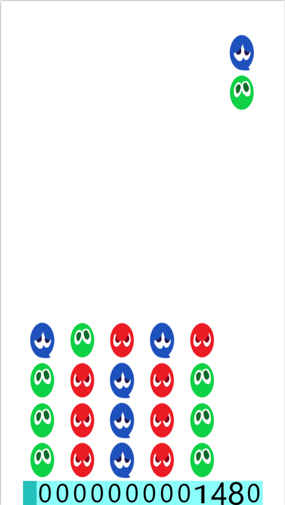

ぷよぷよ
ぷよぷよプログラミングという学習教材を使って、ぷよぷよを作りました。
教材の内容に少し手を加えて、ぷよぷよが初心者でも扱いやすいようにしました。
遊び方
右上にある↑のボタンを押して、画面をクリックするとスタートします。
ぷよぷよのルール説明
↗このような丸い物体をぷよと言います。
これを4つ以上つなげると、つなげたぷよを消すことができます。
また、ぷよは落下をします。そのため、ぷよを消してぷよが落下した後、落下したぷよがまたつながると、連鎖となります。
それを何回繰り返したかで、何連鎖かが決まります。
例えば、１回繰り返すだけだと２連鎖、２回繰り返せば４連鎖、３回繰り返すと４連鎖となります。
まずは５連鎖を目標にしましょう！
←５連鎖はこのような形です。
操作方法
右下にある、矢印キーを使います。
↑反時計回りに回転
→右に進む
←左に進む
↓速く落ちる